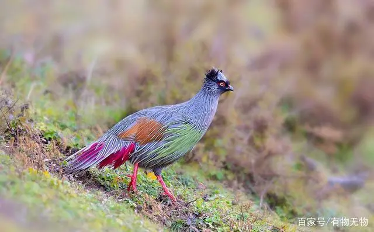
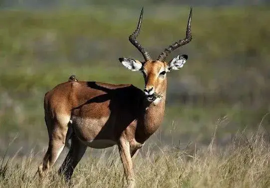
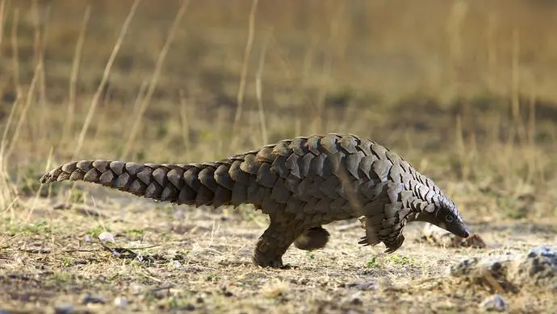

血雉
血雉别名血鸡、松花鸡，是鸡形目雉科血雉属的鸟类。 血雉的雄鸟头部灰色，额、眼先、眉纹、颊和耳羽黑褐色，眼周橘红色，头后具灰色丝状冠羽； 上体灰色，带细长的羽干纹，羽干纹为白色，带有纤细的黑边，条条明晰； 尾羽基部灰色，端部渐白，杂有绯红色羽丝；下体颜色类似上体而略淡，

鬣羚
鬣羚是偶蹄目牛科鬣羚属哺乳动物，别名苏门羚、明鬃羊、山驴子、岩驴、四不像等。 上体呈褐灰色，灰白色或黑色；上下唇白色，吻端裸露呈黑色；尾基部和腹面锈棕色；四肢的毛为赤褐色， 表面有环状的棱及不规则的纵行沟纹。寿命约15年。

穿山甲
穿山甲，是鳞甲目穿山甲科 [11]穿山甲属地栖性哺乳动物的统称，共8个物种。 [10]穿山甲头圆锥状，头骨光如卵石，吻细长，眶小，鼻骨后端较宽，后端中点向两侧倾斜； 没有牙齿；四肢粗壮，前、后肢上各具五趾，趾端上的爪子粗大而锐利；尾巴呈扁平状。 穿山甲因其体表覆瓦状排列的硬角质厚甲片，很像古代士兵的铠甲，故名